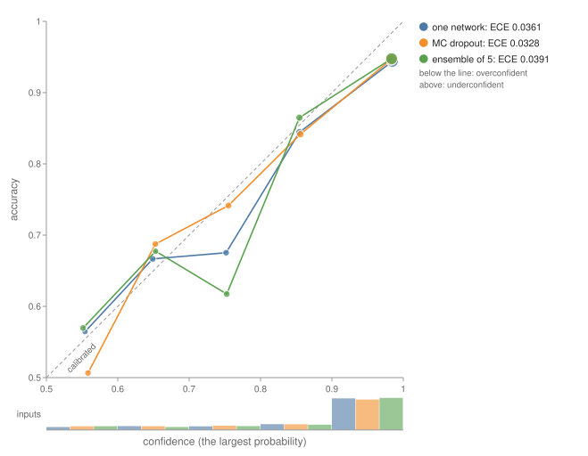
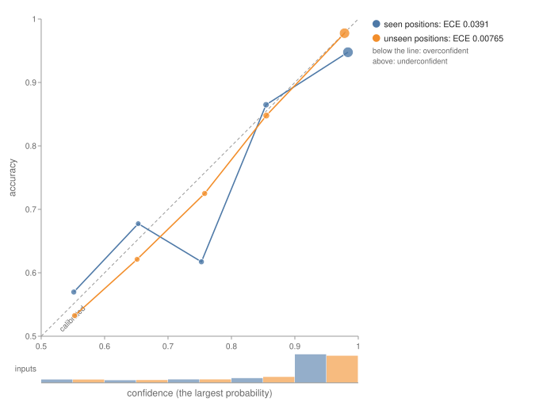
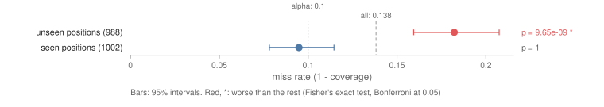
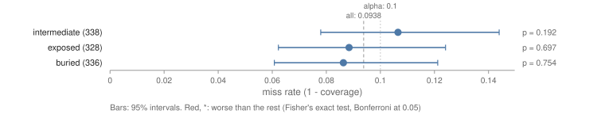
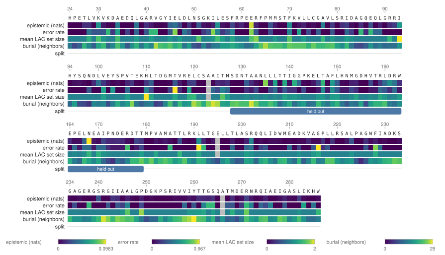
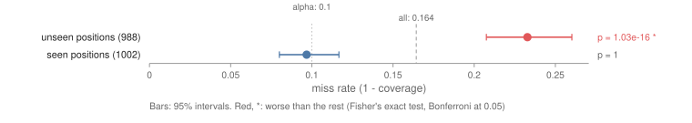

Recipe: How Sure Is the Model?¶
What you'll build: a model that predicts which mutations of an enzyme still work, and an answer, for each prediction, to how far it can be trusted. ESM-2 has never seen a measurement of TEM-1 β-lactamase, the enzyme that makes E. coli resistant to ampicillin. A small head on its representations learns from a deep mutational scan (Stiffler et al. 2015, 4,996 single mutants) whether each mutant still gives resistance. Then the recipe asks four questions:
- Is it calibrated? Do its 90% predictions come true 90% of the time? A reliability diagram compares one network, Monte Carlo dropout and an ensemble of five.
- How sure is it, and why not? The uncertainty of each prediction is split into noise in the data (aleatoric) and what the model doesn't know (epistemic).
- What can it promise? Conformal prediction sets and intervals that hold the truth 90% of the time, and where that promise breaks.
- Where on the protein is it unsure? The uncertainty residue by residue, on the structure.
The split. The measured positions are cut into five contiguous blocks, and every mutation in the middle block (residues 128 to 179) is held out: these are the unseen positions. The other mutations are shuffled into training (50%), calibration (25%) and test (25%) sets. The test mutations sit at seen positions, where the head was trained on other mutations.
The predictions were written into the recipe before it ran:
- The ensemble is better calibrated than one network on the test set: a lower ECE and log loss. Monte Carlo dropout lies between them.
- Epistemic uncertainty is higher at unseen positions than at seen ones (a one-sided permutation test, p < 0.05). Aleatoric uncertainty rises less.
- Uncertainty ranks the errors: the most certain half of the test predictions is more accurate than all of them.
- The conformal sets cover at least 90% of the test mutations, within sampling error. At unseen positions, which aren't exchangeable with the calibration set, they cover less.
- No prediction for burial: the test says whether buried, intermediate or exposed residues are undercovered.
Predictions 2, 3 and 5 hold. Prediction 1 holds for the log loss and Brier score, but not for the ECE, where all three are within 0.006 of each other. Prediction 4 holds for the regression intervals: at unseen positions they cover 82%, not 90%. It fails for the class sets, which cover 93% there. ESM-2 650M generalizes to the unseen stretch well enough that its sets still hold. Its epistemic uncertainty rises there all the same. That is the lesson of the recipe: epistemic uncertainty marks what is unfamiliar, not what is wrong. A weaker model, ESM-2 8M, gets the unseen positions wrong, and there both guarantees break (A weaker model).
CMake target: how_sure_is_the_model_recipe (examples/recipes/how_sure_is_the_model.cpp).
./build/how_sure_is_the_model_recipe MODEL_DIR PROTEINGYM_DIR 1BTL.cif out/ [--device hip] [--members N]
Note
The recipe needs the same downloads as One protein end to end:
an ESM-2 checkpoint, ProteinGym's DMS_substitutions.csv and DMS_ProteinGym_substitutions/,
and 1BTL.cif. With esm2_t33_650M_UR50D on an AMD gfx1151 GPU it takes 99 seconds; with
esm2_t6_8M_UR50D (31 MB) on a CPU, 56 seconds. ESM-2 runs once over the wild type plus one
masked pass per residue; the heads train on the CPU.
The model¶
Each mutant is described by 1,301 numbers:
- ESM-2's final representation of the mutated residue, from one pass over the wild type;
- the new amino acid, one-hot;
- ESM-2's zero-shot score, log p(new) − log p(old) with the residue masked.
Each column but the one-hot is standardized by the training set. The head is
Linear(1301, 64) → ReLU → Dropout(0.3) → Linear(64, 1), trained for 40 epochs with AdamW
(learning rate 10⁻³, weight decay 10⁻²) and binary cross-entropy on whether the mutant still
works (ProteinGym's DMS_score_bin, half of the mutants).
Five heads trained from seeds 1 to 5 make the ensemble (Lakshminarayanan et al. used 5). For
Monte Carlo dropout, the first head runs 30 times with its dropout on (McDropoutSamples). Five
more heads with two outputs predict the measured fitness and their own noise, trained with
GaussianNLLLoss; CombineGaussians mixes them.
1. Is it calibrated?¶
1. Is it calibrated? Test set, 1002 mutants at seen positions
one network accuracy 0.865 log loss 0.375 Brier 0.204 ECE 0.036
MC dropout (30) accuracy 0.861 log loss 0.359 Brier 0.203 ECE 0.033
ensemble of 5 accuracy 0.865 log loss 0.363 Brier 0.200 ECE 0.039
at unseen positions (988 mutants):
ensemble of 5 accuracy 0.881 log loss 0.265 Brier 0.165 ECE 0.008
Spearman with the measured fitness: seen positions unseen positions
zero-shot ESM-2 score 0.703 0.825
regression ensemble 0.881 0.853
All three are well calibrated, and their ECEs are within the noise of 1,002 predictions in 10 bins. The ensemble and Monte Carlo dropout do improve the log loss and the Brier score, which score every probability, not just the bins. The supervised head beats ESM-2's zero-shot score at seen positions (Spearman 0.88 against 0.70). At unseen positions it barely does (0.85 against 0.83): what it learned there is mostly what ESM-2 already knew.

The middle block happens to be easier: the head is more accurate there (0.881) and better calibrated (ECE 0.008).

2. How sure is it?¶
2. How sure is it? Mean entropy in nats, seen positions / unseen positions
ensemble of 5 total 0.229 / 0.254 aleatoric 0.220 / 0.233 epistemic 0.0088 / 0.0211
MC dropout (30) total 0.247 / 0.262 aleatoric 0.230 / 0.242 epistemic 0.0178 / 0.0203
regression ensemble variance: aleatoric 0.3721 / 0.3542 epistemic 0.0249 / 0.1065
ensemble epistemic: higher at unseen positions? 0.0211 against 0.0088 (x2.4), one-sided p = 0.001
ensemble aleatoric: higher at unseen positions? 0.2333 against 0.2204 (x1.1), one-sided p = 0.09
regression epistemic: higher at unseen positions? 0.1065 against 0.0249 (x4.3), one-sided p = 0.001
accuracy of the most certain test predictions (ensemble, by total entropy): 25%: 0.988 50%: 0.960 75%: 0.940 100%: 0.865
DecomposeUncertainty splits the ensemble's predictive entropy, mutant by mutant, into the
members' mean entropy (aleatoric) and the rest, the mutual information (epistemic, how much the
members disagree). At unseen positions the members disagree 2.4 times as much, and the regression
ensemble's means 4.3 times as much. The noise each member predicts hardly changes. The test is
PerSliceError on the uncertainties instead of errors: a permutation test of the unseen
positions' mean against the rest, with 999 relabelings, so p = 0.001 is the smallest it can give.
Yet the head is more accurate at unseen positions. Epistemic uncertainty says the input is unlike the training data, not that the answer is wrong. Monte Carlo dropout barely sees the shift (0.0178 against 0.0203): its samples come from one network and agree more than an ensemble's.
Total uncertainty does rank the errors. The quarter of test predictions the ensemble is surest of is right 98.8% of the time, against 86.5% for all of them. The least certain quarter holds two thirds of the errors (90 of 135), so a lab that checks those mutants by hand catches most of the model's mistakes for a quarter of the work.
3. What can it promise?¶
3. What can it promise? Conformal sets at alpha = 0.10, calibrated on 1002 mutants
LAC q = 0.631 seen positions: coverage 0.906, mean size 1.09 (0 empty, 907 of 1, 95 of 2)
unseen positions: coverage 0.927, mean size 1.10
APS q = 0.928 seen positions: coverage 0.903, mean size 1.20 (33 empty, 735 of 1, 234 of 2)
unseen positions: coverage 0.936, mean size 1.22
intervals, fitness +- 0.996: coverage 0.905 at seen positions, 0.818 at unseen ones
Interval misses, seen against unseen positions:
error 0.1382 over 1990 inputs; each slice against the rest (Fisher's exact test, alpha 0.05 over 2 slices)
slice n error 95% interval rest p
unseen positions 988 0.182 0.159 to 0.207 0.095 9.65e-09 WORSE
seen positions 1002 0.095 0.078 to 0.115 0.182 1
at least one slice is worse than the rest
Split conformal prediction calibrates on the 1,002 calibration mutants, which the heads never
trained on (CalibrateConformalClassifier, CalibrateConformalRegressor):
- Class sets. A set is {works}, {doesn't}, or both when the model can't tell. LAC gives a single answer for 907 of the 1,002 test mutants and covers 90.6%. Randomized APS covers 90.3%, with larger sets and some empty ones, which its randomization allows.
- Intervals. The ensemble's predicted fitness ± 0.996 covers 90.5% of the test mutants.
On the test set, both keep the promise. The promise rests on the test mutants being exchangeable
with the calibration ones, which mutations at unseen positions aren't. There the intervals miss
18.2% of the time, nearly twice the 10% allowed, and PerSliceError on their misses
(CoverageReport::misses) flags it. The class sets happen to cover 92.7% there, because this
model generalizes. Nothing guarantees that it would.

Within the test set, coverage doesn't depend on how buried the residue is. Burial is the number of other residues' Cβ atoms within 10 Å of the residue's own, in 1BTL, cut into thirds. Each third's misses are within its interval of 10%:

4. Where on the protein is it unsure?¶
The tracks are averages over each residue's test and unseen mutants, numbered from the start of the precursor. The track at the bottom marks the held-out block.

structure.html paints the same tracks on 1BTL in 3D (RenderStructureHtml), so the uncertain
residues can be found on the fold.
A weaker model¶
The same recipe with esm2_t6_8M_UR50D, 80 times smaller, on a CPU:
ensemble of 5 accuracy 0.852 log loss 0.376 Brier 0.217 ECE 0.042 (test set)
ensemble of 5 accuracy 0.676 log loss 0.833 Brier 0.482 ECE 0.150 (unseen positions)
ensemble epistemic: higher at unseen positions? 0.0312 against 0.0039 (x7.9), one-sided p = 0.001
LAC q = 0.681 seen positions: coverage 0.903, mean size 1.10 (0 empty, 897 of 1, 105 of 2)
unseen positions: coverage 0.767, mean size 1.22
intervals, fitness +- 1.139: coverage 0.906 at seen positions, 0.655 at unseen ones
On the test set it does as well as 650M. At unseen positions its accuracy falls to 0.676, its epistemic uncertainty rises eightfold, and both promises break: the sets cover 76.7% and the intervals 65.5%. Its regression head is worse there than its own zero-shot score (Spearman 0.36 against 0.45). The head learned the positions' averages, and at unseen positions it has none.

Verify¶
The run is deterministic: the split, the initial weights, the mini-batches, the dropout masks and APS's randomization all come from fixed seeds. The output directory gets:
reliability.svgandreliability_unseen.svg(RenderReliabilityDiagramSvg);coverage_by_split.svg,interval_coverage_by_split.svg,coverage_by_burial.svganderror_by_burial.svg(RenderSliceErrorSvg);residue_tracks.svgandstructure.html;classification_report.json, the ensemble's test-set report (pulsatrix_svgdraws it).
--smoke runs the tiny test model on crambin (1CRN) with a made-up assay, to check the plumbing;
CTest runs it as Recipe.HowSureIsTheModelSmoke.
Going further¶
- Performance: every metric, the uncertainty split and conformal prediction used here.
- One protein end to end: the same enzyme, zero-shot, with a relevance explanation of its most damaging mutation.
- Fix the shift. Recalibrate on mutations near the new positions, or use a score scaled by the ensemble's spread, which widens intervals where the members disagree. pulsatrix has neither yet; see the KS-3 follow-ups in the roadmap.